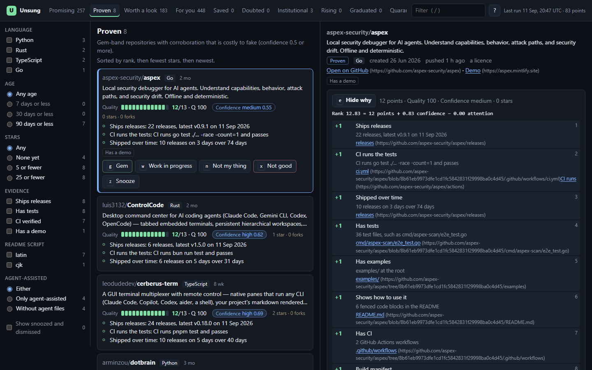
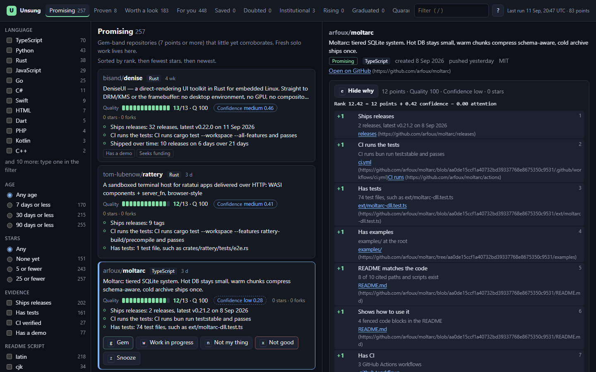

Quality
Points from evidence a reader can check: code, tests, CI, releases, a lockfile, usage examples. Proof signals add more: CI runs the tests and passes, releases on different days, the README's files exist. Stars never enter it.
Open source · no dependencies · MIT
Thousands of repositories appear on GitHub every day. A few of them are careful, working software written by someone who has not told anyone. Unsung finds those, and ranks them by what they show — tests that run, versions that ship, a README that describes files which are really there. Never by how many people starred them.

A repository collects stars when people happen to see it: a launch post, a well-known author, a day on a trending page. Most good work never gets that moment. On a uniform sample of new, low-star repositories, the star count barely told genuine projects from the rest (AUC 0.62); a plain checklist of evidence did it well (AUC 0.95).
A coding agent writes a tidy README, a licence, badges and a CI file in minutes, so the surface of a repository says less than it used to. What is still expensive to fake is what Unsung looks at hardest: tests that CI really runs, releases shipped weeks apart, time between the first commit and the last push, and other people turning up with issues.
Three meters, computed separately and never blended. Every number explains itself.
Points from evidence a reader can check: code, tests, CI, releases, a lockfile, usage examples. Proof signals add more: CI runs the tests and passes, releases on different days, the README's files exist. Stars never enter it.
Corroboration that is costly to fake: push days stamped by GitHub's servers, releases spread over weeks, established accounts opening issues, an owner with years of history.
Stars and forks, kept apart. They decide only whether a repository is still unsung — 25 stars at most — and nudge the rank a little.
rank = points + 1.5 × confidence − 1.5 × attention
Repositories from two live runs were labelled blind: the labeller read the code and never saw stars or scores.
The labellers were AI agents rather than people, so read this as a strong indication, not the final word. The full write-up covers what went wrong too: re-uploads that reached the top, and good work the checklist missed.
Each point is a chip with a reason and a link to the evidence at the exact commit that was scored. The explorer also says what would earn the next points and what would raise confidence, so a low score is a to-do list rather than a verdict. Two squashed commits are never penalised; neither are badges, emoji or an agent's help.
Triage runs from the keyboard: g saves a gem, n is not my thing, x is not good, p publishes a pick with your note.

You need Node 20 or later and a GitHub token. There is nothing to install.
git clone https://github.com/skulitom/unsung
cd unsung
npm run unsung -- run # a ten-minute, read-only scan
npm start # the explorer at http://127.0.0.1:8750A quick run uses under a hundred of the 5,000 GraphQL points GitHub allows each hour, resumes after Ctrl-C, and never writes anything to GitHub. Give it a fine-grained token that can read public repositories and nothing else; the README explains how, and covers the optional model review.